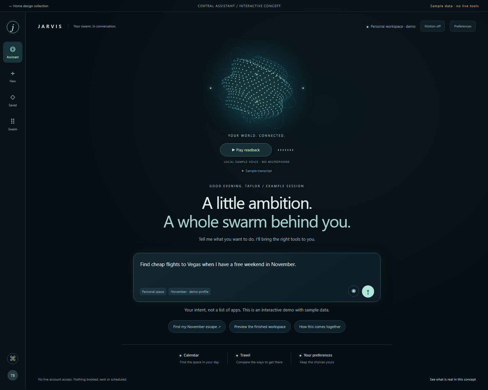
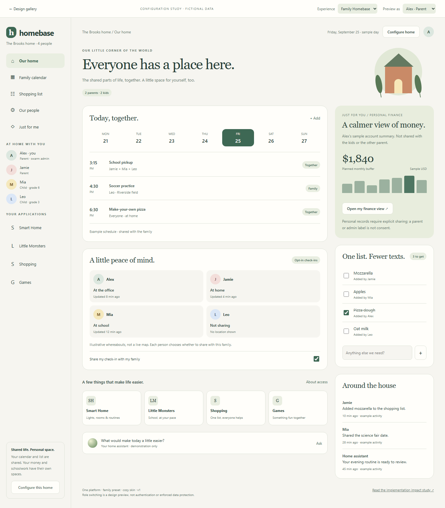
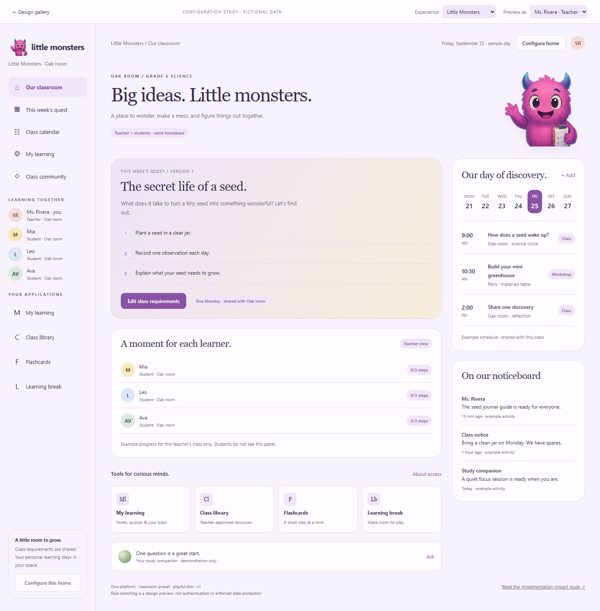
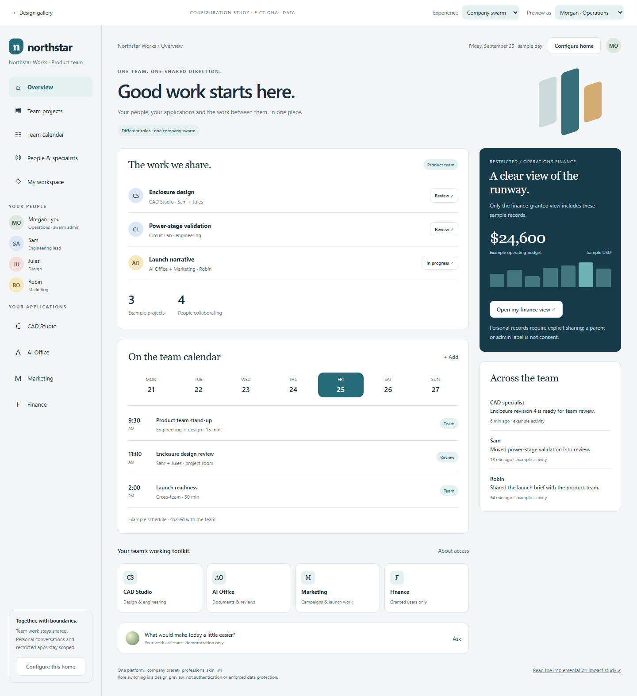
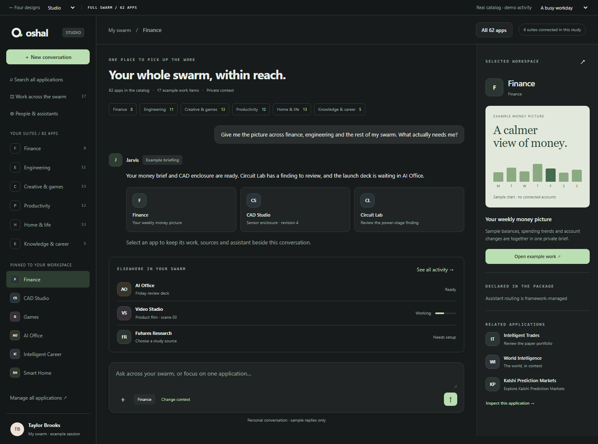
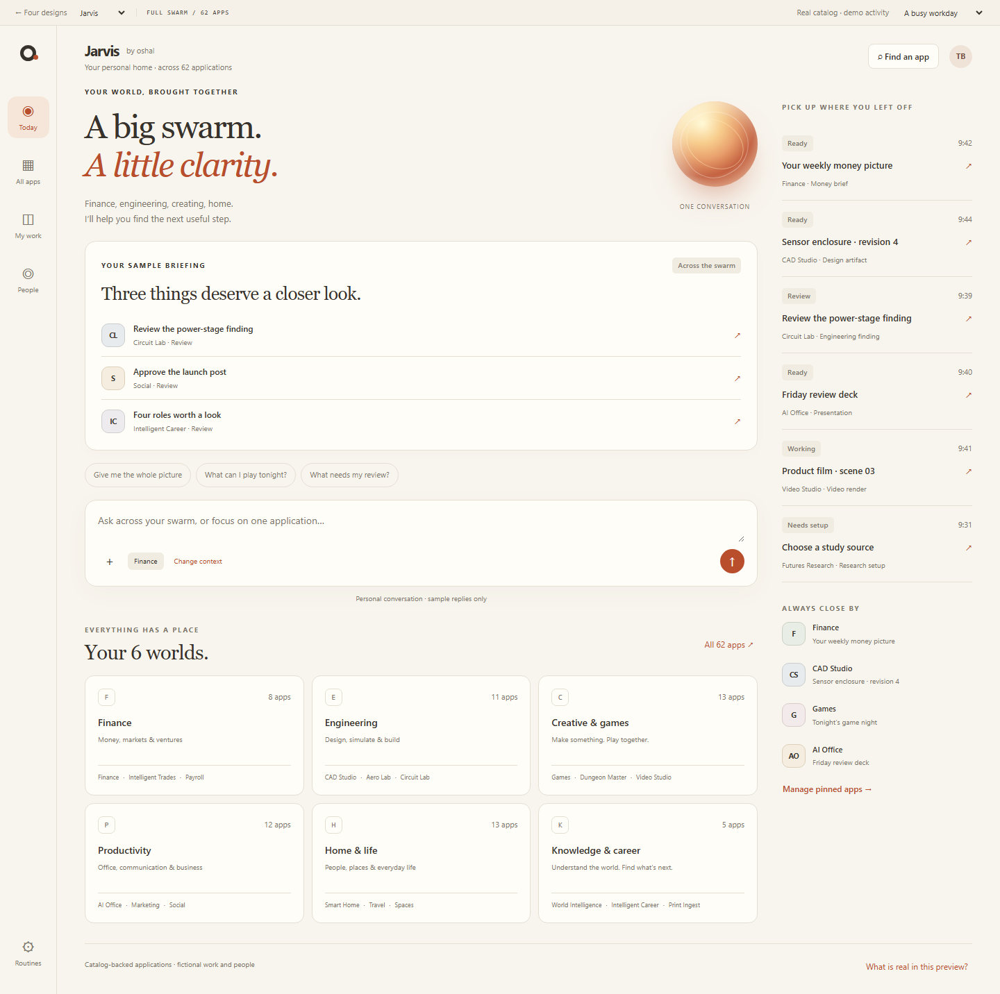
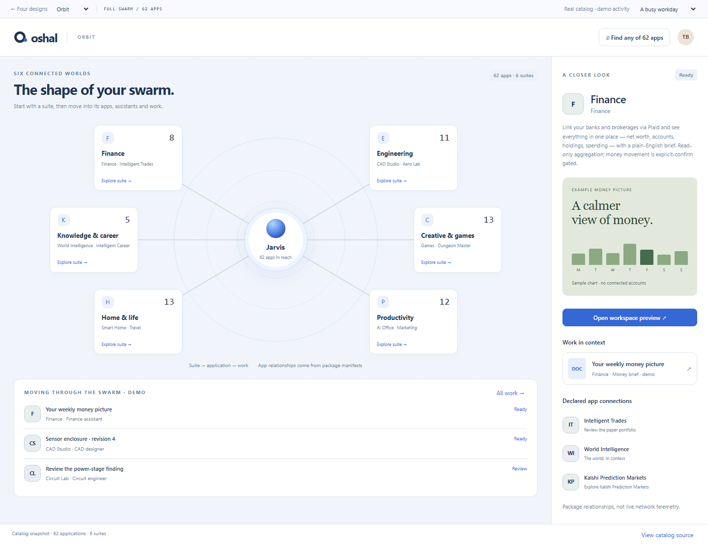
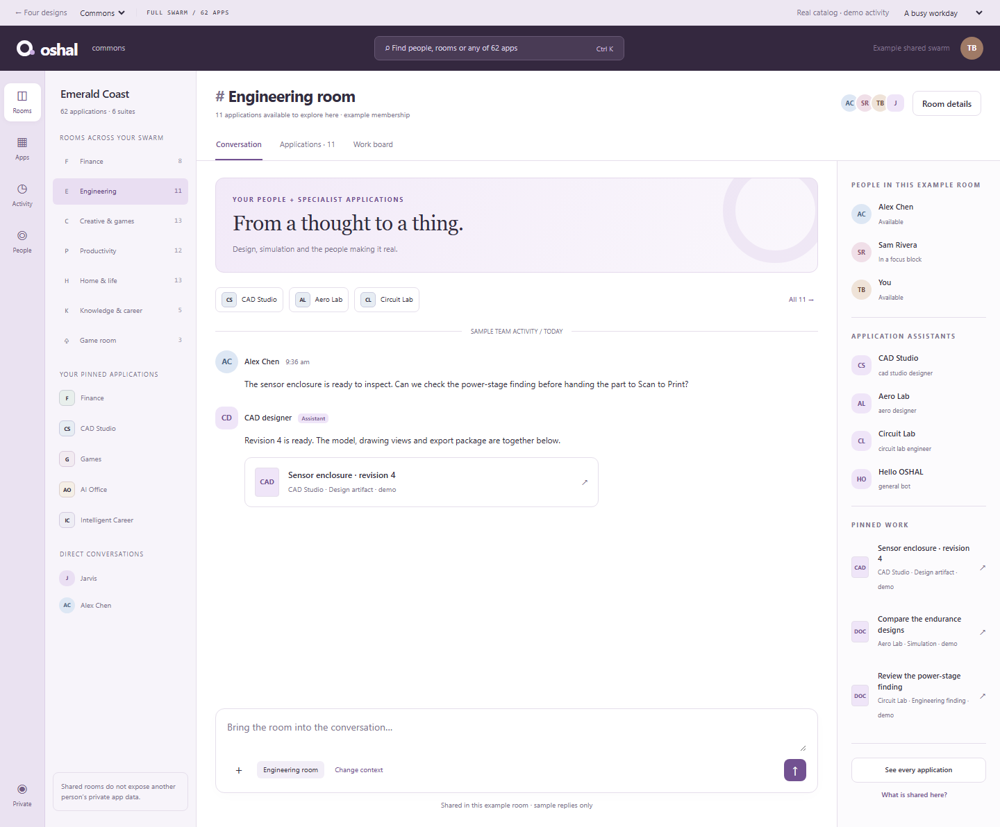

62 applications.
Four ways to feel at home.
Finance, engineering, games, creating, home and the rest of your actual app catalog. Explore how each home handles the whole swarm.
Real package names and relationships.Demo people, activity and work.
A little ambition.
A whole swarm behind you.
Start with an intent. Watch Calendar and Travel form a workspace around your conversation.
Meet your swarm’s center ↗Interactive Vegas weekend demo · fictional data
One swarm. Three ways to belong.
Switch between people to see shared life and personal space. Change a skin, publish the preview, then change it back.

A home for all four of you. ↗
Two parents. Two kids. Shared calendars and lists, with their own worlds alongside.

Small steps. Big discoveries. ↗
Teachers and students share a class, not the same permissions or private records.

A shared place to do good work. ↗
Projects and people together. Private work and restricted apps stay scoped.

Studio
A quiet place to think, build and review.

Jarvis
One trusted assistant, the whole picture.

Orbit
See the system. Follow the work.

Commons
Your team and your bots, in the same room.
The earlier work is here, too.
Recovered clickable studies, preserved alongside these four directions.